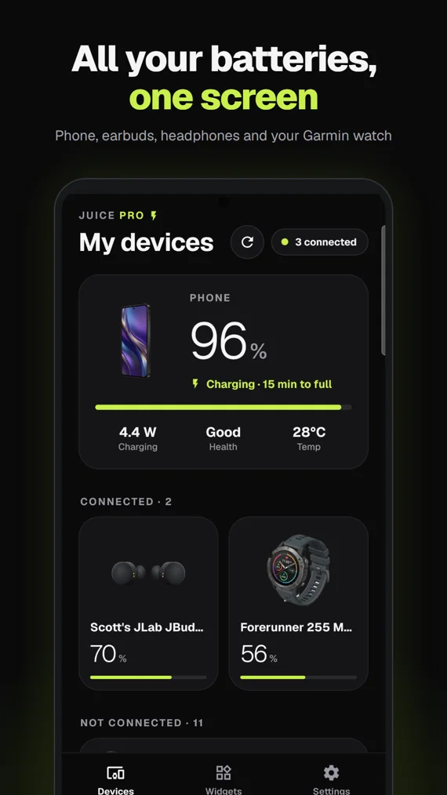
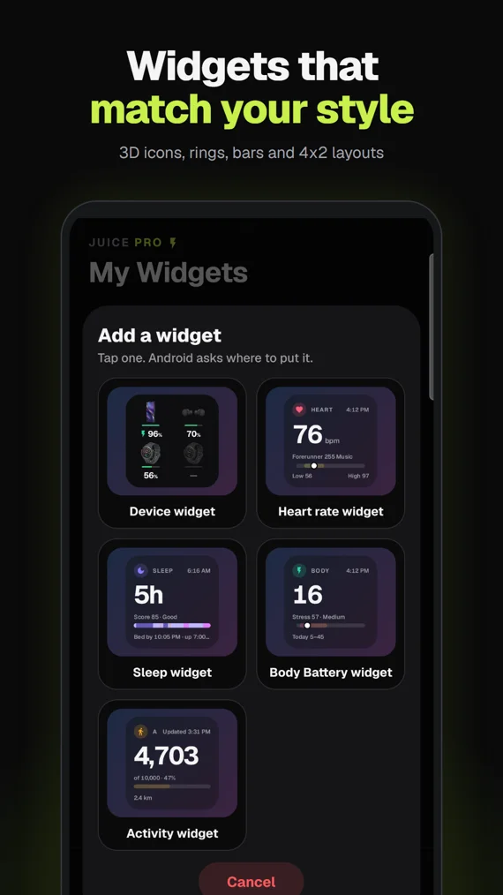
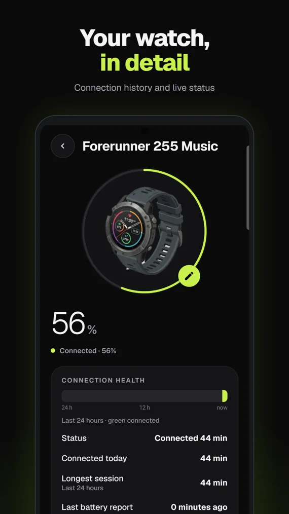
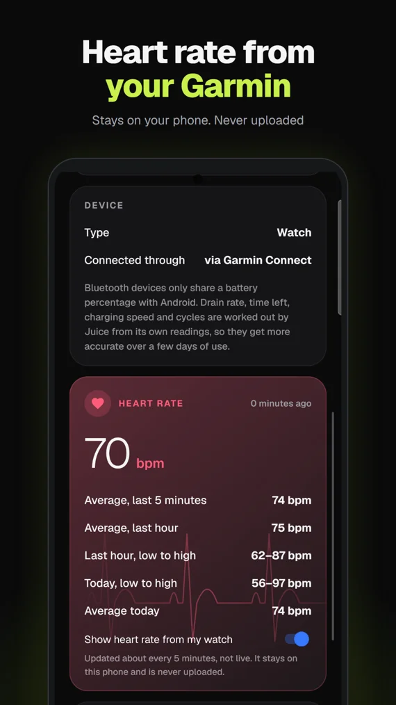
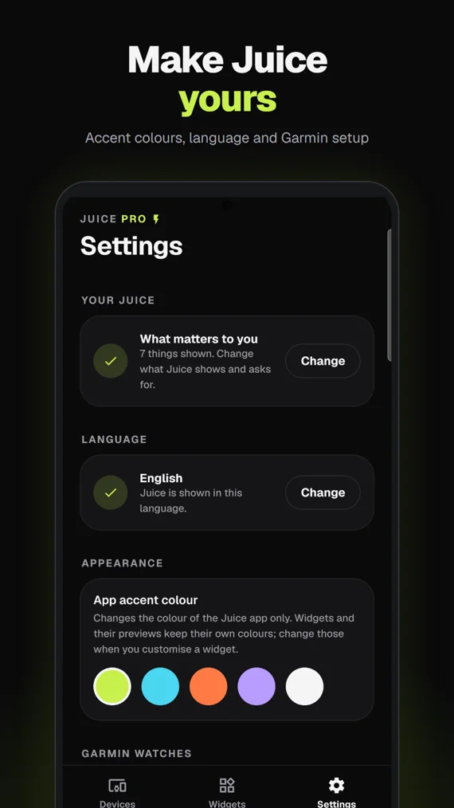
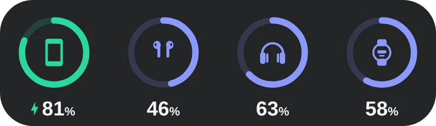
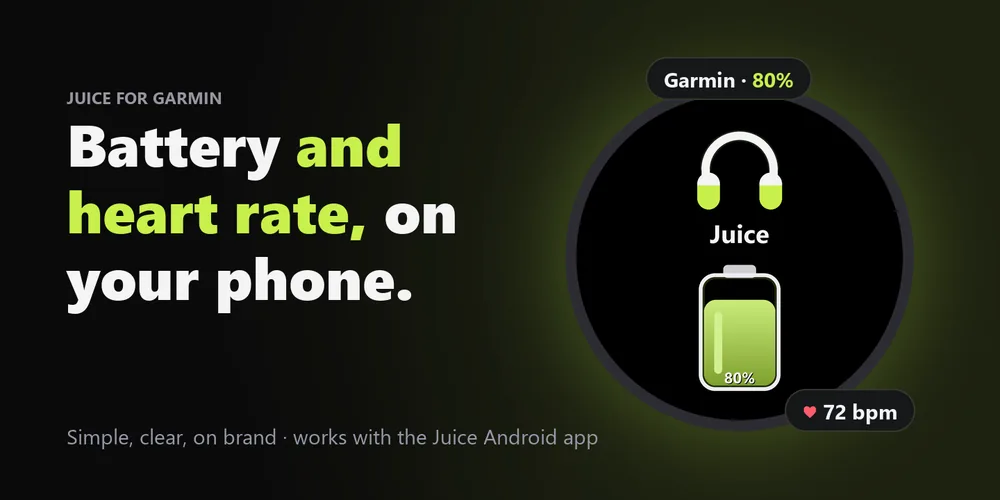

New: Juice now speaks 11 languages, opens with a short film and a quick set-up of what you want to track, and has a new 3D icon pack and clearer Garmin cards. See the release notes.
On this page: Features First launch Permissions Garmin watch setup Heart rate Widgets Languages Troubleshooting Contact Privacy Release notes





What Juice does
Free
All your batteries
This phone (level, wattage, health, temperature) plus connected and recently seen Bluetooth devices with their last known level. AirPods, Beats and Galaxy Buds show left, right and case separately.
Connection history
A 24-hour timeline for each device, with quick disconnects highlighted, so you can see which earbuds keep dropping out.
Alerts
A "Needs attention" list for low batteries, and a low-battery pill on the device itself.
One resizable widget
Stretch it into a row, a column or a grid, from 1×1 to 4×4. Rings, capsules, batteries, blocks, lines, icons and cards, with live light and dark previews.
Make it yours
Rename any device, change its icon from a large library, and pick the app accent colour.
Screen time by app
See which apps used your battery since you unplugged, on the phone card (needs Usage access).
Juice Pro ONE-TIME PURCHASE
No subscription. Pay once, keep it, and every future widget, icon and feature is included.
All styles, colours and 3D icons
Every widget style, full colour control and the 3D icon packs, tinted by battery level or in their own true colours.
Garmin watch battery
Your watch shows up as a device next to your phone and earbuds. Works with every Garmin watch that can run watch apps.
Heart rate widget
Latest bpm, 5-minute and hourly averages, today's low and high, resting heart rate and a trend line.
Sleep widget
Last night's total, deep, light, REM and awake time, a stage chart, sleeping heart rate, HRV, SpO₂, a score, and the bedtime Juice suggests for tonight.
Body Battery widget
Body Battery with today's range and trend, stress, steps, floors, breathing and SpO₂.
Activity widget
Steps against your goal, distance, active calories, floors, exercise minutes, weight, a seven-day chart and your last workout.

First launch
The first time you open Juice (free or Pro) you will see:
- A short film and the Juice logo.
- Choose your language. The whole app switches to it straight away. You can change it later in Settings → Language.
- Tell Juice what you want to track. Devices, a Garmin watch, app battery use, sleep, Body Battery, activity or heart rate. Juice only shows what you pick and only asks for the permissions those choices need. You can change this any time in Settings.
- Allow what Juice asks for. See the permissions below. Everything is optional except Bluetooth for seeing Bluetooth devices.
- Add a widget from the Widgets tab, or by long-pressing your home screen.
Permissions: what Juice asks for, and why
Juice only asks for what a feature needs, and explains it first. Android never allows all of these in one popup, so Juice Pro includes a Set up Juice Pro screen with an Allow everything button that walks through each Android screen in turn and skips anything already granted. It stays available in Settings while anything is missing.
| Permission | Why Juice needs it | If you say no |
|---|---|---|
| Nearby devices (Bluetooth connect and scan) | Reads the battery level of your Bluetooth devices, and the per-earbud level of AirPods, Beats and Galaxy Buds. Never used for location. | Only the phone's own battery can be shown. |
| Usage access | Shows screen time by app on the phone card. Android sends you to a special settings screen: find Juice in the list and switch it on. | The phone card hides the by-app section. Everything else works. |
| Unrestricted battery | Lets widgets keep updating in the background. On Samsung phones, set Juice's battery use to Unrestricted. | Android may pause updates, so widgets can look out of date. |
| Health Connect (read only) PRO | Sleep, heart rate, resting heart rate, HRV, SpO₂, breathing, steps, distance, active calories, floors, exercise and weight, for the sleep and activity widgets. Garmin Connect writes the data there. | The sleep and activity widgets show a prompt instead of numbers. |
| Connect IQ via Garmin Connect PRO | The Juice watch app sends battery, heart rate, Body Battery, stress, SpO₂, steps, floors and breathing to your phone through the Garmin Connect app. | The Garmin watch does not appear. |
You can withdraw any permission at any time in Android settings or in Health Connect. Juice reads Health Connect read-only and never writes to it.
What you need for Garmin features
- Juice Pro on your Android phone (Android 12 or newer).
- The Garmin Connect app on your phone, with your watch already paired.
- The Juice watch app from the Connect IQ Store. It's built for every Garmin watch that can run watch apps, including Forerunner 255/265/955 and Fenix 7/8. The watch app itself is free.
- For sleep and activity: Garmin Connect → More → Settings → Connected apps → Health Connect switched on.

How Garmin data reaches your phone
Garmin watches don't share their battery over normal Bluetooth, and Garmin doesn't give watch apps access to sleep. So Juice uses two private routes:
- The Juice watch app sends battery, heart rate, Body Battery, stress, SpO₂, steps, floors and breathing to your phone through Garmin Connect, straight away when opened and then every five minutes.
- Health Connect carries sleep, steps, distance, calories, floors, workouts and weight, which Garmin Connect writes there once you switch it on.
Garmin watch setup steps
- Check your watch is connected. Open Garmin Connect on your phone and make sure your watch shows as connected.
- Install the watch app. Open the Juice page in the Connect IQ Store, or search for Juice (developer sabrkei) in the Connect IQ Store inside Garmin Connect, and install it on your watch.
- Sync. Let Garmin Connect sync so the app lands on your watch.
- Open Juice on the watch once. It sends its battery to your phone straight away, then every 5 minutes.
- Add a widget. In Juice on your phone, add a widget (or edit one) and choose your Garmin watch from the device list.
- Check it's working. Open Juice's Settings → Garmin watches. It should say your watch is sending its battery.


Heart rate from your Garmin watch PRO
Juice shows the latest reading, 5-minute and hourly averages, today's lowest, highest and average, and your resting heart rate. It uses the same Juice watch app, so there is nothing extra to install, but the watch app needs to be up to date.
- Update the watch app from the Connect IQ Store and let Garmin Connect sync.
- Open Juice on the watch once.
- Open your watch in Juice. On My devices, tap your Garmin watch and scroll to the Heart rate card.
- Switch on “Show heart rate from my watch”. If it says it is waiting, give it up to five minutes and open Juice on the watch again.

Widgets: add, set up and change
All Juice widgets resize from 1×1 to 4×4 and show more as they grow. Tapping a widget opens Juice (or Garmin Connect, or its settings if it still needs access).
Add a widget
- In Juice: open the Widgets tab, choose a widget and tap Add to home screen. Android asks where to put it.
- Or from your home screen: long-press, choose Widgets, find Juice and drag one out. The previews follow your phone's light or dark theme.
- Pick its devices and look. The settings screen opens when you place it. Tick up to 8 devices, then choose style, light/dark/auto, accent colour, background and opacity, and whether device names show.
- Change it any time: Widgets tab → Edit widget, or long-press the widget on your home screen and open its settings.
Battery widget
Phone, Bluetooth devices and watch. Rings, capsules, batteries, blocks, lines, icons and cards. Rename devices and change their icons.
Heart rate widget PRO
Small: bpm. Wide: plus today's figures. Square: resting, average and range bar. Large: everything plus a trend line.
Sleep widget PRO
Duration, stages, score and tonight's suggested bedtime. Set your wake-up time and the sleep you need in its settings.
Body Battery widget PRO
Energy, stress, steps, floors, breathing and SpO₂ from your watch.
Activity widget PRO
Steps against your goal and a seven-day chart, plus distance, calories and your last workout.
An older heart rate or Body Battery reading stays on the widget but greyed, so it never passes for a live number. Until your watch has sent data, widgets show sample numbers in the Widgets tab and a prompt to open Juice on the watch.
Suggested bedtime = wake-up time (from your recent nights, or one you set) minus the sleep you need, minus 15 minutes to fall asleep, plus up to 45 minutes of catch-up after short nights.

Languages
Juice is fully translated into the language you choose, including widgets and device names. Pick yours on first launch, or change it in Settings → Language (it also appears under Android's per-app language settings).
- English
- Deutsch
- Français
- Español
- Italiano
- Nederlands
- Polski
- Português
- Svenska
- Norsk
- Dansk
The Garmin watch app and this website are in English.
Troubleshooting
Devices and Bluetooth
My Bluetooth device isn't listed
Pair it in Android settings first, switch it on and connect it once. Check Juice has Nearby devices permission (Settings → Apps → Juice → Permissions). Only devices that report a battery level (Bluetooth Low Energy, or via the maker's own app) can show one: if a device doesn't report it, Juice can't show it.
A device shows a level but it's out of date
Juice shows the last known level in grey, with when it was last seen. It refreshes when the device connects again. Earbuds in a closed case only update when the lid opens.
AirPods or Galaxy Buds show one combined number
AirPods and Beats can show left, right and case if you allow Nearby devices. Galaxy Buds are experimental: if Galaxy Wearable already uses the connection, Juice shows one combined number. Other brands only share one combined number with Android, so they can't be split.
Widgets look stale or stop updating
Android may be stopping Juice in the background. Set Juice's battery use to Unrestricted (Settings → Apps → Juice → Battery). On Samsung also remove Juice from Sleeping apps and Deep sleeping apps in Device care. Juice shows a reminder on the Devices tab when this is needed.
My widget doesn't appear in the widget list
Open Juice once so it registers its widgets, then restart your launcher. Heart rate, sleep, Body Battery and activity widgets only appear once Juice Pro is unlocked.
My widget changes didn't show
Open Juice once so the widget refreshes. Use Widgets → Edit widget, or long-press the widget and open its settings.
The widget preview in the picker looks wrong
Previews are generated on your phone and follow its light or dark theme. Android limits how often apps can update them, so after a change give it a minute and reopen the picker.
Garmin watch
"No watch has reported yet"
Open the Juice app on the watch once, make sure Garmin Connect shows the watch connected, then tap a Juice widget on your phone to ask for a fresh reading.
Watch missing from the device list
Open Garmin Connect, wait for it to sync, then reopen Juice. Juice only sees watches Garmin Connect knows about, and needs the Juice watch app installed. Garmin support needs Juice Pro.
Watch battery looks stale
Keep Garmin Connect allowed to run in the background (battery Unrestricted), and Juice too. The watch sends its battery every 5 minutes while connected.
No heart rate, or it's greyed out
Update the Juice watch app from the Connect IQ Store, open it on the watch once, and switch on Show heart rate from my watch on your watch's page. It can take up to five minutes. A watch without a heart rate sensor sends none. A greyed number is older than about half an hour.
Body Battery, stress or SpO₂ show “—”
Update the Juice watch app: the latest version asks for one extra Connect IQ permission, SensorHistory. Accept it in Garmin Connect when it appears, then open Juice on the watch. Watches that don't record a value show “—”.
Sleep and activity
The sleep or activity widget says "Connect" or shows no data
Tap it and allow Health Connect. Then in Garmin Connect go to More → Settings → Connected apps → Health Connect and switch on sleep, steps and the other data. Open Garmin Connect to sync. If Health Connect isn't installed or needs an update, Juice shows a button to get it.
Last night's sleep is missing
Open Garmin Connect so it syncs the night to Health Connect, then open Juice. Data can take a few minutes to arrive.
The sleep score is different from Garmin's
Garmin doesn't share its sleep score with Health Connect, so Juice calculates its own estimate and labels it that way.
Language and purchases
How do I change the language?
Settings → Language in Juice. You can also use Android's per-app language setting (on Samsung: Settings → General management → Language → App language).
I bought Juice Pro but it shows as locked
Open Settings → Juice Pro → Restore purchases. Make sure you're signed in to the Google account that bought it in the Play Store. If it still doesn't unlock, contact support with your order number.
Still stuck?
Reinstall the Juice watch app from the Connect IQ Store, force-stop Garmin Connect and open it again, then repeat the watch setup steps. If that doesn't fix it, contact us below.
Contact and support
Still need help, found a bug or have an idea? Email contact@gbg-web.com.
To help us fix it quickly, include your phone model, Android version, the Juice version (Settings, at the bottom), your Garmin watch model if it's about the watch, and what you expected to happen.